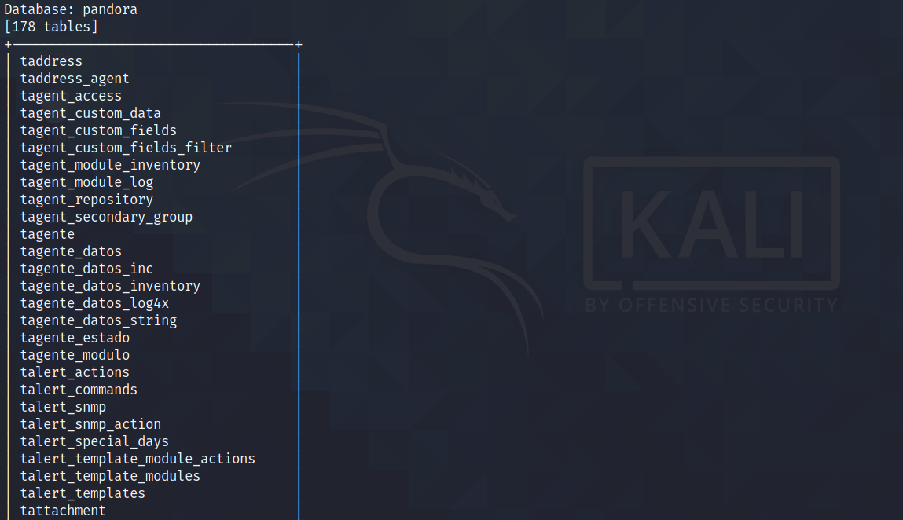
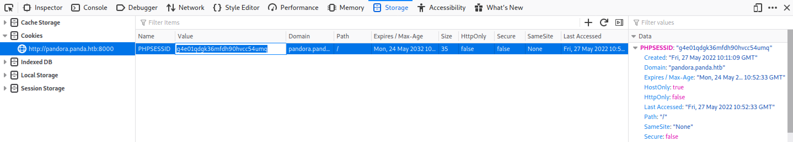

June 14, 2022
In this tutorial, we will see how to perform a SQL injection on the Artica Pandora FMS using sqlmap. This will allow us to read SESSION IDs from the database and we will see how to use wfuzz to find a valid SESSION ID and login as another user on the target.
This page contains more information about this vulnerability.
Visiting the console page presents a login page.
Let's browse to "chart_generator.php" console page. The response is "Access Is Not Granted".
Adding the "session_id" parameter with the value of a (') single-quote results in a SQL error. This can be an indication of a SQL injection vulnerability.
Copy the request from Burp Suite to a file.
This shows the captured request. Note that I have changed the value of the "session_id" parameter from a single-quote to 1.
Running sqlmap with the "--dbs" option displays all the database names. There are two databases: information_schema and pandora.
It shows all the tables in the "pandora" database. It was able to find 178 tables.
It dumps the contents of the "tsessions_php" table. We can see that this table contains a bunch of session IDs.
Let's save all the session IDs in a file called "session_ids.txt".
Running wfuzz with the session IDs in the file shows that one of the them produces an output with a different length.
Right-click on the browser window and click on Inspect. Click on the Storage tab and paste in the session ID.
Refresh the web page and now you have admin privileges on the FMS.
If you liked reading this article, you can follow me on Twitter: mujtabareads.